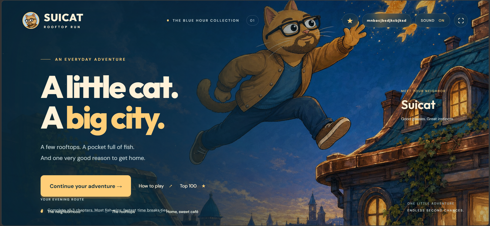
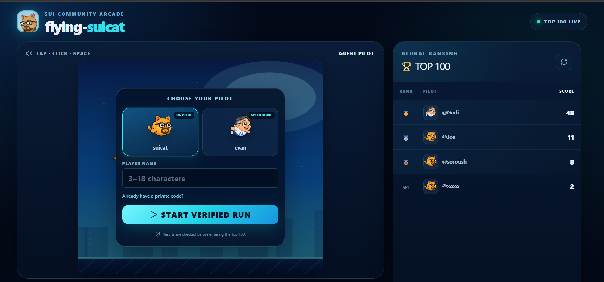
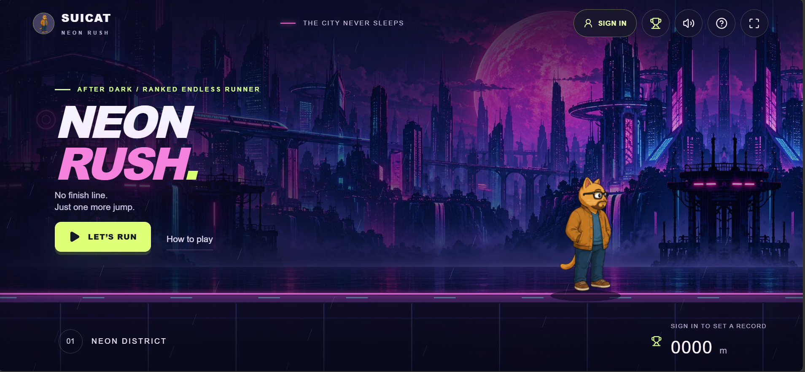
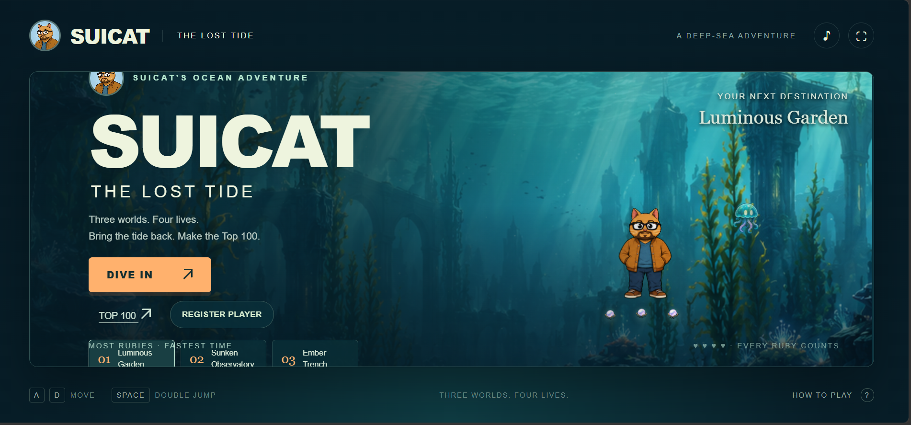
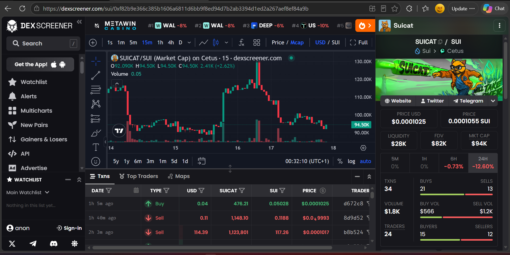

The Token
SUICAT lives on Sui as a community meme token. This site showcases verified market information and links to the official listing — no trading flow, no promises, just a clear window to inspect the market for yourself.
Meet SUICAT — explore the games, discover the ecosystem, and follow the community behind the cat. Four worlds, one mascot, all live on Sui.
SuiCat is a community meme project on Sui with a playful universe around one character. The site gathers what exists today — its identity, its games, its creative work, and its community — without inventing what doesn't.
SUICAT lives on Sui as a community meme token. This site showcases verified market information and links to the official listing — no trading flow, no promises, just a clear window to inspect the market for yourself.
Four playable worlds already live: a sky-dodger, a rooftop runner, a neon racer, and a deep-sea dive. Each has its own art, rules, and leaderboard. All free to play on the web.
SUICAT Studios produces the visuals and animation for projects across the Sui ecosystem. A small gallery below highlights the look and feel without inventing client lists.
Object-centric, Move-native, and stored on Walrus — SuiCat's worlds are built to move fast and stay forever. Explore the arcade and market without leaving Sui.
All official links point to verified SuiCat destinations. Check the footer for the full list before you click.
This is not the official SuiCat website — it points you to the official site at suicatcoin.com.
suicatcoin.com ↗Parallel execution and object ownership — Sui keeps every fish, jump, and trade snappy and yours.
Lightweight and static, Walrus-ready — relative assets, no server, just Sui.
Every game is already live on the official SuiCat site. This arcade gives you a hierarchy — a featured entry plus a balanced grid — with honest descriptions and direct links.

Featured • The Blue Hour CollectionA little cat. A big city. Hop across rooftops at dusk, pocket the fish, and find your way home. Three chapters, endless second chances — the coziest runner in the Catverse.

Sui Community Arcade • Top 100 LiveThe classic sky-dodger with a SuiCat twist. Pick your pilot, start a verified run, and chase the Top 100. Tap / click / space to stay aloft.

After Dark • Ranked Endless RunnerNo finish line. Just one more jump. Dash through Neon District under a magenta moon. Sign in to set a record — every metre counts.

A Deep-Sea Adventure • Three worlds, four livesThree worlds. Four lives. Every ruby counts. Dive from Luminous Garden to Sunken Observatory to Ember Trench — collect, survive, make the Top 100.
Game descriptions reference the official pages linked above. Visuals are screenshots of the official game pages.
A clean overview sourced from the verified DexScreener listing. Snapshot values below reflect the supplied reference screenshot — not a live feed. Always check the live page before making decisions.
0x63e89267aad1dcbd9fb84e7686db54bd128cb25ce4e9f1fda97fc716c4b73682::suipump::SUIPUMP
Snapshot from the supplied DexScreener screenshot (DexScreener • Cetus • SUICAT/SUI). Market cap $94K, FDV $82K, liquidity $28K, volume $1.8K, price $0.0001025 — as visible in that capture. Not live data. No trading flow on this site.
Risk note: crypto assets are volatile. Nothing here is financial advice.

The official site describes SuiCat Studios as producing visuals and animation for projects across the Sui ecosystem. Below is a restrained look at the identity — official mascot, game art, and the blue-hour world — without inventing client lists.
The mascot — orange fur, brown jacket, blue knit, glasses and a soft beard — shows up consistently: running, loafing on a rooftop, playing with the Sui droplet, asleep. The studio keeps the character coherent so the games feel like one world.
Copy above is an original summary of the studio description on suicatcoin.com — not a verbatim paste.
Three verified doors. One cat. Join where you live — X for updates, Telegram for the daily coil, DexScreener for the market itself.
Updates, game drops, and community posts from @Suicatdotsui.
Follow on X ↗The live community at t.me/suicatdotsui — come for the purrs.
Join Telegram ↗Verified Cetus pair on Sui. Snapshot above, live data on DexScreener.
Open DexScreener ↗